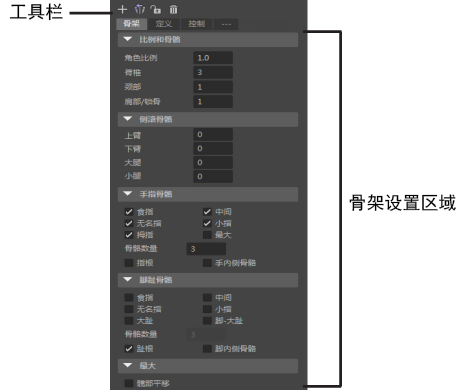

- “骨架”(Skeleton)选项卡工具栏位于 HumanIK 窗口 的“骨架”(Skeleton)选项卡上方


|
单击以使用默认骨架创建新 HumanIK 角色。默认情况下，新角色命名为角色 n ，其中 n 是顺序编号。 根据 HumanIK 命名惯例创建有已命名关节的骨架。若要修改默认骨架，可以使用“骨架”(Skeleton)选项卡设置区域中的选项来编辑关节设置。也可以在场景视图中调整关节的位置和旋转。 |

|
在场景视图中调整关节的位置和旋转时，单击可将所做的调整从骨架的左侧镜像到右侧。 重要： 仅编辑骨架的左侧，然后再单击。镜像始终从骨架的左侧应用到右侧。
|

|
锁定和解除锁定当前骨架定义。 |

|
删除当前骨架及其骨架定义。 |
有关与修改骨架关联的操作，请参见 HumanIK 窗口菜单按钮下的编辑骨架(Edit Skeleton)子菜单。